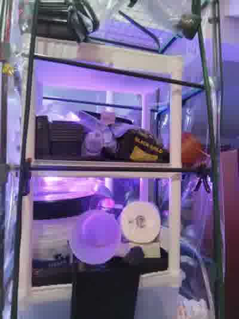
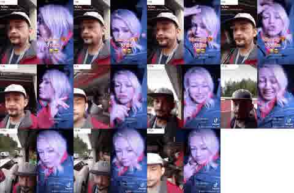

Network + electronics bench
Original lab-history photos document the networking stack, hands-on electronics work, Raspberry Pi hardware, a solderless breadboard and project-board work. A 24-port Ubiquiti PoE switch is part of the integrated lab.

REAL LAB · REAL RECEIPTS · REAL RECOVERY MISSION
A Washington R&D lab built piece by piece is sitting in storage. The mission is to recover it, bring it back to Tennessee, and put the hardware back to work building On the Double and continuing technical R&D.
THIS DIDN'T START WITH A PITCH DECK
Wires. Switches. Raspberry Pi systems. Monitors. Servers and workstations. Breadboards, electronics, networking, storage, cloud research, broken ideas, working ideas, and the stubborn habit of learning by doing.
The photos are the receipts. The equipment was assembled, used, expanded, and eventually placed into storage in Washington. The next chapter is not buying a fantasy lab. It is recovering the one that already exists.
THE RECEIPTS
Public campaign images are lightweight derivatives. Original source files remain preserved separately with their original filenames.



Original lab-history photos document the networking stack, hands-on electronics work, Raspberry Pi hardware, a solderless breadboard and project-board work. A 24-port Ubiquiti PoE switch is part of the integrated lab.
A coherent photo sequence shows the multi-computer environment assembled and in use, including multiple displays, desktop systems, printer/peripherals and rack/network hardware.
The storage video connects the working-lab history to the Washington storage unit. That is the bridge between what was built and what needs to come home.
The full December active-lab sequence is preserved in the source archive. This public page stays deliberately light so the evidence can load quickly on a phone.
THE STORAGE RECEIPT
This public contact sheet comes from the original 2023-12-28-110025326.mp4, identified as the “everything in storage” video. The original is preserved separately. The social-media overlay is historical context, not a substitute for the file metadata.
No exact storage address is published here. The campaign needs proof, not somebody else's keys.

WHERE IT GOES NEXT
The recovered hardware is meant to become working infrastructure again: cleaned, inventoried, mapped, powered up carefully, and assigned new roles for On the Double development and continuing R&D.
The Dojo is not a trophy room. It is the workshop. Build. Test. Document. Break what needs breaking. Fix what matters. Repeat.
CALLING ALL BUILDERS
A ninja here is anybody who learns quietly, builds with what they have, documents the work, and keeps moving when the plan gets knocked sideways.
If you've ever built at a kitchen table, in a garage, in a borrowed room, on a folding desk, or with gear you had to pack away before the idea was finished, you understand this mission.
THE $10,000 MISSION
The target is fixed at $10,000. Line-item amounts stay open until real quotes and receipts exist. No fake precision.
1,000 people × $10
or500 × $20
or200 × $50
This page never handles donations directly. When the fundraiser URL is added, the button will take supporters to the fundraising platform.
BUILD LOG